Nível 3

É hora de sair para o jardim e fazer a diferença!
Vais aprender como transformar restos de
comida em adubo para fazer compostagem.
Mostra as tuas habilidades e continua a ajudar
o planeta!

0/11
00:00
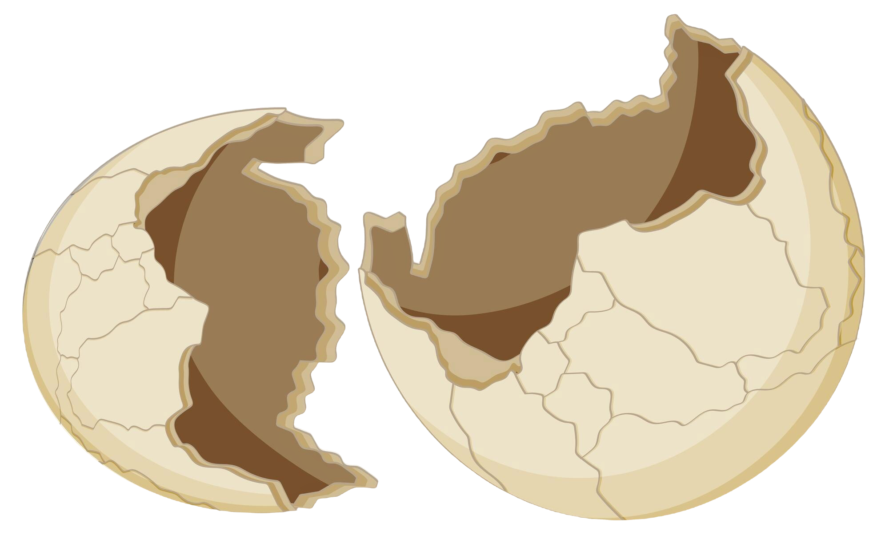

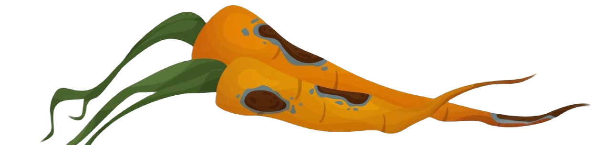
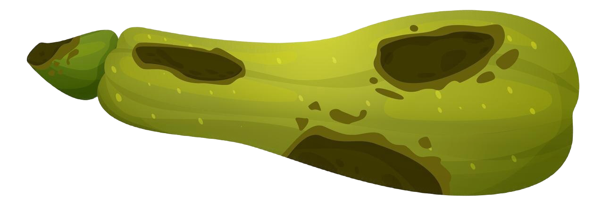
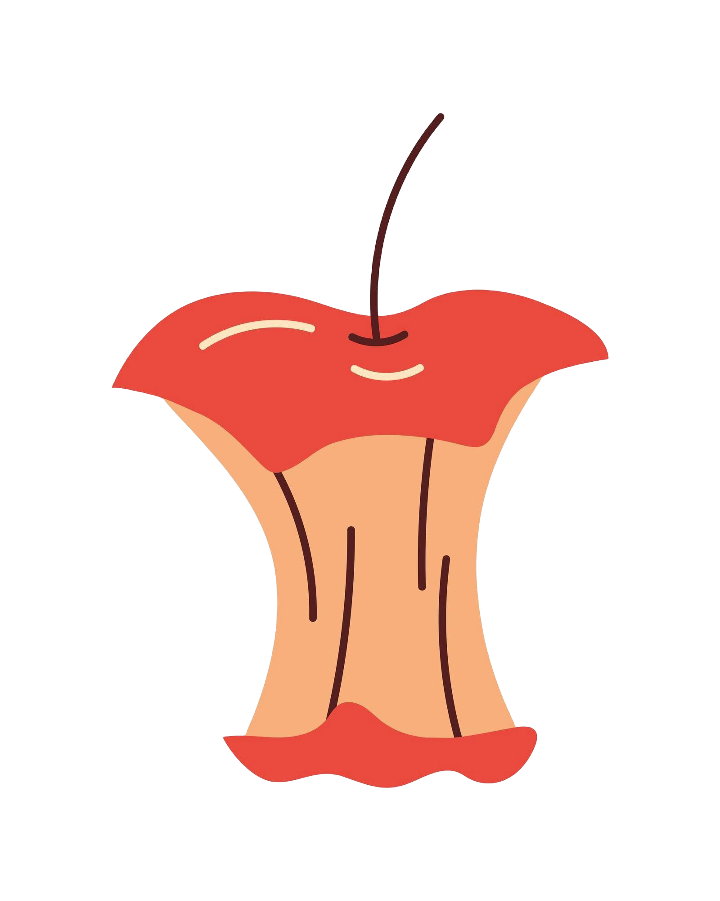
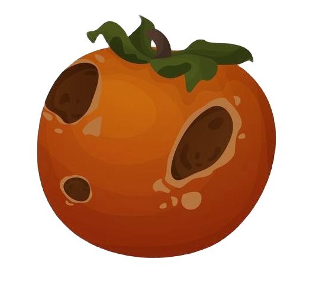
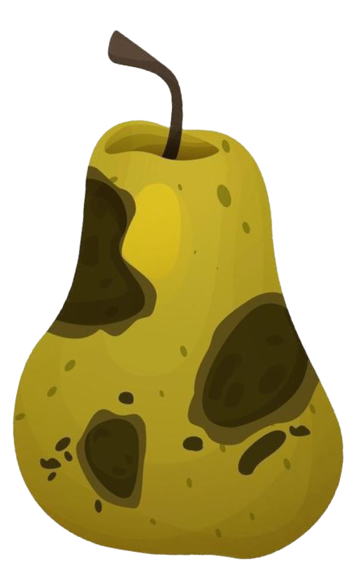
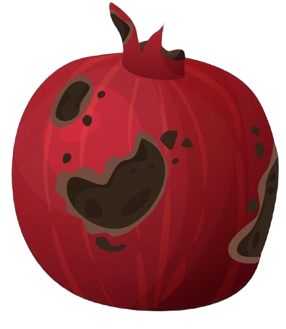
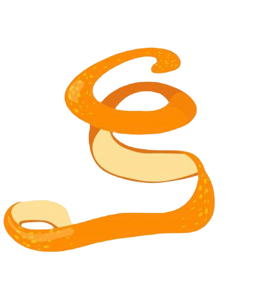
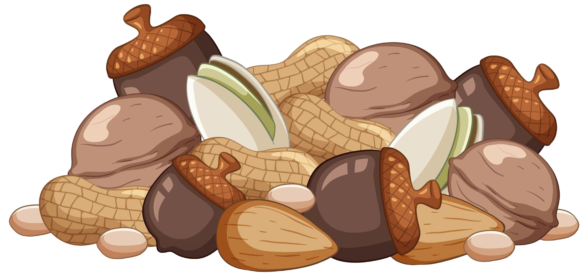
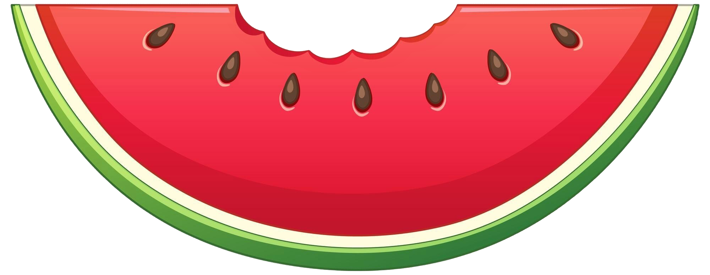

Parabéns! Ajudaste as plantas do teu jardim a crescer!
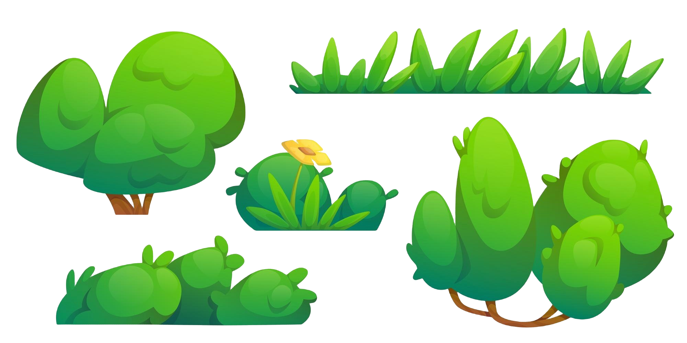
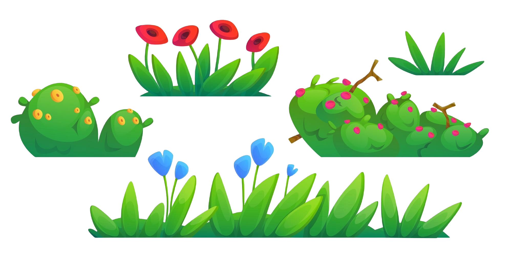
Nutrientes perdidos!
Restos biodegradáveis libertam gás metano,
um causador do efeito estufa. Separa os
resíduos e transforma o lixo em fertilizante
rico para o solo! O planeta agradece!